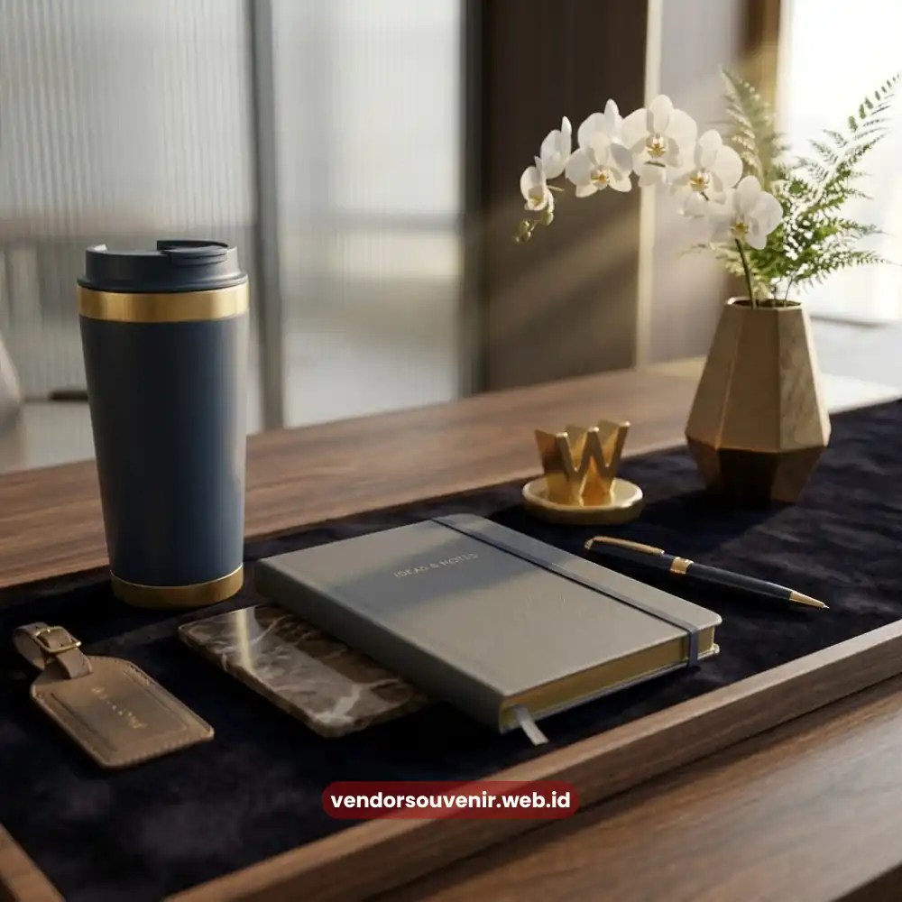
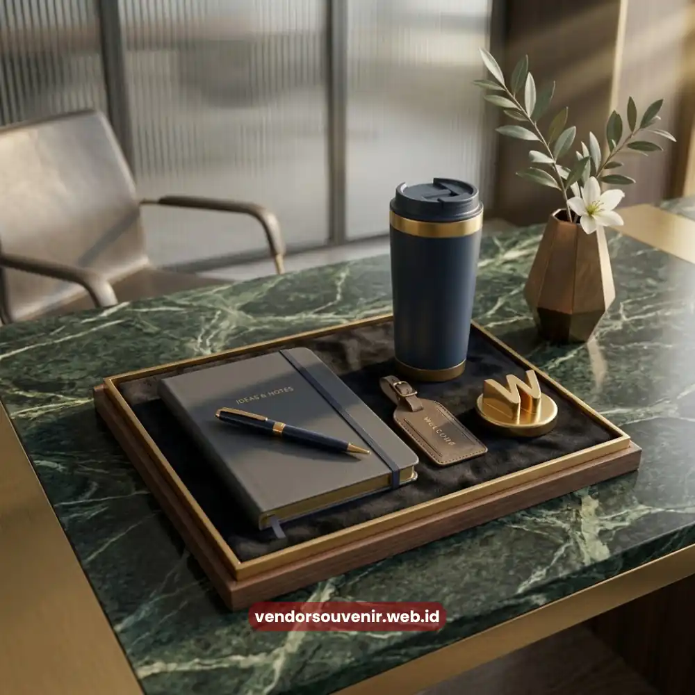

Daftar Isi
Isi welcome pack kantor yang ideal umumnya mencakup kombinasi barang fungsional dan barang bernuansa personal yang mencerminkan identitas perusahaan.
Kombinasi ini penting agar paket sambutan tidak hanya terlihat menarik, tetapi juga benar-benar terpakai dalam aktivitas kerja sehari-hari karyawan.
Pemilihan isi yang tepat akan menentukan seberapa besar dampak welcome pack terhadap kesan pertama karyawan baru.
Banyak tim HR masih kebingungan menentukan kombinasi barang yang pas.
Terlalu sedikit item dapat terkesan kurang perhatian, sementara terlalu banyak dapat membebani anggaran tanpa menambah nilai yang berarti.
Oleh karena itu, memahami kategori barang yang paling relevan menjadi langkah awal yang penting sebelum menyusun paket sambutan.
- Isi welcome pack kantor idealnya mencakup barang fungsional dan barang identitas merek.
- Alat tulis dan perlengkapan kerja tetap menjadi komponen paling sering digunakan.
- Barang minum seperti tumbler menjadi favorit karena nilai guna jangka panjang.
- Sentuhan personal seperti kartu ucapan menambah kesan hangat pada paket.
- Vendor Souvenir dapat menyesuaikan kombinasi isi sesuai kebutuhan dan anggaran perusahaan.
Apa Saja Kategori Barang yang Umum Dimasukkan dalam Welcome Pack Kantor?
Kategori barang dalam welcome pack kantor secara umum terbagi menjadi tiga kelompok, yaitu perlengkapan kerja, barang gaya hidup, dan elemen personal atau branding.
Perlengkapan kerja mencakup buku catatan, pulpen, dan tas kerja yang mendukung aktivitas harian karyawan.
Barang gaya hidup meliputi tumbler, mug, atau totebag yang dapat digunakan baik di kantor maupun di luar jam kerja.
Sementara elemen personal biasanya berupa kartu ucapan selamat bergabung atau buku panduan budaya perusahaan.
Kombinasi ketiga kategori ini membuat welcome pack terasa lengkap tanpa terkesan berlebihan.
Perusahaan dapat menyesuaikan proporsi masing-masing kategori sesuai dengan karakter industri dan anggaran yang tersedia.
Misalnya perusahaan kreatif cenderung menambahkan lebih banyak elemen personal, sementara perusahaan korporat besar lebih menekankan pada kualitas perlengkapan kerja.

Contoh Kombinasi Isi Welcome Pack Kantor
Mengapa Alat Tulis dan Perlengkapan Kerja Tetap Menjadi Komponen Utama?
Alat tulis dan perlengkapan kerja tetap menjadi komponen utama karena tingkat penggunaannya yang tinggi dalam aktivitas harian karyawan.
Hal ini berlaku secara umum terlepas dari jenis pekerjaan atau industri tempat mereka bekerja.
Notebook untuk mencatat arahan kerja, pulpen untuk menandatangani dokumen, hingga folder untuk menyimpan berkas administrasi awal adalah kebutuhan praktis yang hampir selalu digunakan sejak minggu pertama.
Penyertaan perlengkapan kerja berkualitas juga memberikan sinyal bahwa perusahaan memperhatikan detail operasional, bukan sekadar memberikan barang seremonial.
Karyawan yang menerima alat tulis dengan desain rapi dan material yang baik cenderung merasa lebih dihargai dibandingkan menerima barang seadanya.
Selain fungsi praktis, perlengkapan kerja yang dibranding dengan logo perusahaan turut memperkuat kesan profesional setiap kali karyawan menggunakannya.
Baik saat rapat internal maupun saat pertemuan bisnis dengan klien eksternal di luar kantor.
Bagaimana Barang Gaya Hidup seperti Tumbler dan Totebag Menambah Nilai Welcome Pack?
Barang gaya hidup seperti tumbler dan totebag menambah nilai welcome pack karena sifatnya yang dapat digunakan dalam jangka panjang.
Barang-barang ini sangat fungsional baik di lingkungan kerja maupun aktivitas pribadi karyawan sehari-hari.
Tumbler misalnya, secara umum digunakan hampir setiap hari untuk kebutuhan minum, sehingga logo dan desain perusahaan pada barang tersebut mendapatkan eksposur berulang.
Totebag juga memiliki fungsi serupa, terutama bagi karyawan yang membawa laptop, kotak makan, atau dokumen kerja dari rumah.
Barang-barang jenis ini dianggap lebih personal dibandingkan perlengkapan kantor formal, sehingga menambah nuansa hangat pada keseluruhan paket welcome pack.
Selain nilai fungsional, barang gaya hidup dengan desain menarik juga berpotensi menjadi media promosi tidak langsung bagi perusahaan.
Ketika digunakan karyawan di ruang publik, seperti kafe atau transportasi umum, brand perusahaan dikenal tanpa perlu mengeluarkan biaya pemasaran tambahan.
Apakah Sentuhan Personal Seperti Kartu Ucapan Masih Relevan dalam Welcome Pack Kantor?
Sentuhan personal seperti kartu ucapan tetap sangat relevan dalam welcome pack kantor karena memberikan nuansa emosional yang kuat.
Nuansa ini tentu tidak dapat digantikan oleh barang fisik atau dokumen formal semata.
Kartu ucapan yang berisi pesan singkat dari pimpinan atau tim HR menunjukkan bahwa kehadiran karyawan baru disambut secara personal.
Ini menegaskan bahwa mereka dihargai bukan hanya sekadar mengikuti prosedur administratif perusahaan.
Elemen ini menjadi pembeda penting, terutama di tengah tren digitalisasi proses HR yang membuat interaksi manusiawi semakin jarang terjadi.
Sentuhan kecil seperti tulisan tangan pada kartu ucapan, meskipun sederhana, sering kali menjadi bagian yang paling diingat oleh karyawan baru.
Perusahaan yang ingin memperkuat budaya kerja berbasis kekeluargaan atau kolaborasi biasanya lebih menekankan elemen personal ini.

Dapatkan Kombinasi Isi Welcome Pack Kantor Terbaik Bersama Vendor Souvenir
Isi welcome pack kantor yang ideal adalah kombinasi seimbang antara perlengkapan kerja, barang gaya hidup, dan sentuhan personal yang mencerminkan identitas perusahaan.
Kombinasi ini membantu memastikan setiap barang benar-benar bermanfaat dan berkesan bagi karyawan baru.
Pertanyaan yang Sering Diajukan (FAQ)
Apakah welcome pack kantor harus berisi banyak barang?
Jumlah barang dalam welcome pack kantor tidak harus banyak, karena kualitas dan relevansi barang dengan kebutuhan kerja umumnya lebih penting dibandingkan kuantitas item yang disertakan.
Apakah isi welcome pack kantor bisa disesuaikan per divisi?
Isi welcome pack kantor dapat disesuaikan per divisi, misalnya menambahkan perlengkapan teknis tertentu untuk divisi kreatif atau lapangan, selama tetap mempertahankan elemen inti identitas perusahaan.
Apakah barang elektronik cocok dimasukkan ke welcome pack kantor?
Barang elektronik seperti flashdisk atau power bank dapat dimasukkan ke welcome pack kantor selama sesuai dengan anggaran dan relevan dengan kebutuhan kerja karyawan sehari-hari.
Maroon Souvenir
Partner Corporate Gift terpercaya di Indonesia. Berpengalaman melayani ratusan perusahaan sejak 2018.
Lihat Portofolio Kami